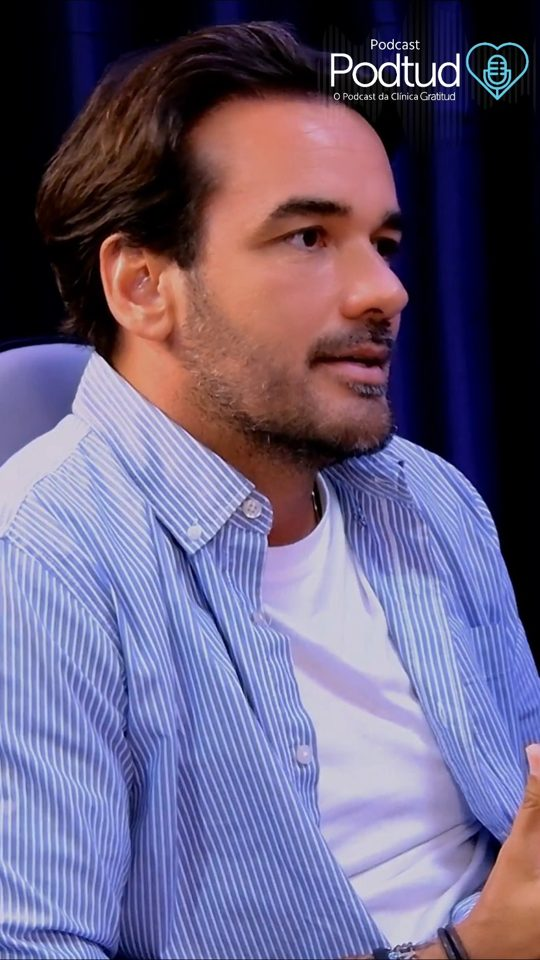
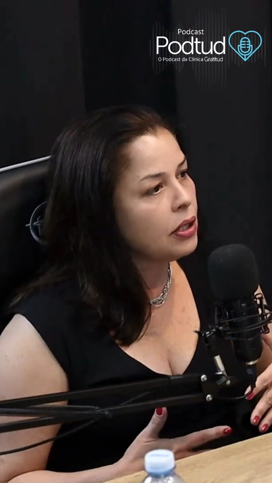
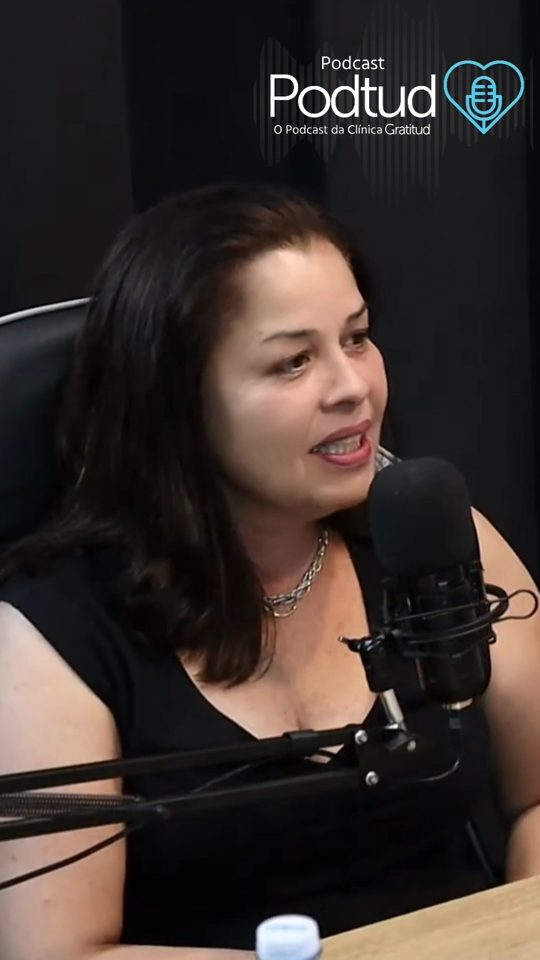

Clínica Gratitud
A clínica roxinha de Jaguariúna. Psicologia, fonoaudiologia e nutrição, pela Unimed, pela Salusmed ou particular.


Acolhimento, respeito e vínculo.
Na roxinha, seis psicólogos  , uma psicanalista, uma fonoaudióloga
, uma psicanalista, uma fonoaudióloga  e uma nutricionista
e uma nutricionista  cuidam de você no Centro de Jaguariúna.
cuidam de você no Centro de Jaguariúna.
Escuta sem julgamento, cuidado com a história de cada pessoa e uma relação de confiança construída sessão a sessão.
Quem cuida de você
Nove profissionais, cada um com o seu jeito de cuidar. Na dúvida sobre qual linha escolher, a equipe ajuda.
Psicanálise
2 profissionaisA pessoa fala livremente e a escuta busca o que se repete na própria história e o que ainda não foi dito.
Centrada na pessoa
2 profissionaisA abordagem centrada na pessoa é a linha humanista de Carl Rogers: escuta sem julgamento, empatia e confiança na capacidade de cada um de encontrar o próprio caminho.
TCC
3 profissionaisA terapia cognitivo-comportamental trabalha a ligação entre pensamentos, emoções e comportamentos, com objetivos combinados e exercícios práticos entre as sessões.
Fonoaudiologia e nutrição
2 profissionaisPara a fala, a leitura, a voz e a audição, e para uma alimentação que cabe na rotina.
Como agendar
Tudo é combinado pelo WhatsApp (19) 99638-4455, de segunda a sexta, das 8h às 18h30. São cinco passos, do primeiro contato ao dia da consulta.
-
Conheça a equipe e escolha um profissional pela página dele. Se preferir, deixe a equipe indicar quem tem o primeiro horário livre.
-
Chame no WhatsApp (19) 99638-4455 ou monte a mensagem no cupom mais abaixo: ela já sai pronta, com o profissional, o convênio e o período que você escolher.
-
A Gratitud é credenciada Unimed Campinas e também atende Salusmed e particular.
Confirme com a equipe qual convênio cada profissional atende antes de marcar.
-
Cada profissional atende um número limitado de pessoas, para cuidar de cada uma com tempo. Entre na lista de prioridade: a equipe fala com você assim que abrir um horário com quem você escolheu.
-
Venha à Av. Lauro de Carvalho, 1001, no Centro de Jaguariúna.
Se for pelo convênio, traga a carteirinha e o token do aplicativo do plano no celular.
Podtud
O podcast da roxinha, no YouTube- SilêncioO peso do silêncio masculino

Seu passado não te define- ComerQuando comer vira desafio
- HistóriaReescrevendo a própria história
 Reestruturação cognitiva
Reestruturação cognitiva- RecomeçoEntre o fim e o recomeço
- AprenderNovos olhares para a aprendizagem

Seletividade alimentar- InfânciaSaúde mental no desenvolvimento infantil
- MulherA saúde mental da mulher

Ansiedade e intestino- Ver todos os episódios no YouTube
Venha até a roxinha
Recorte o cupom: escolha as opções e o WhatsApp abre com a mensagem pronta. É só enviar.